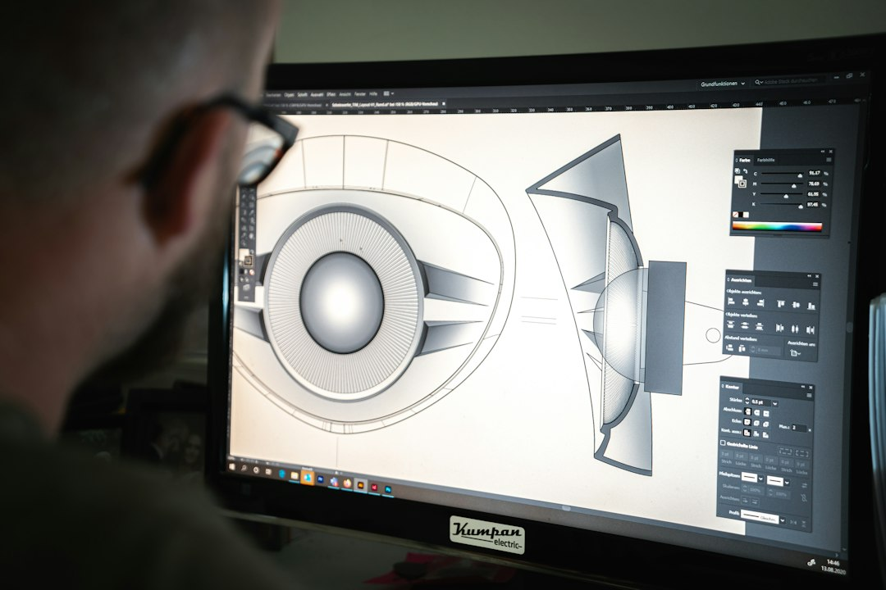
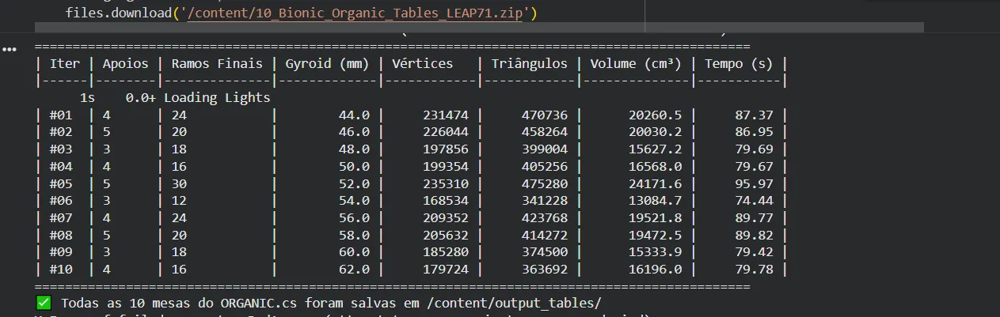
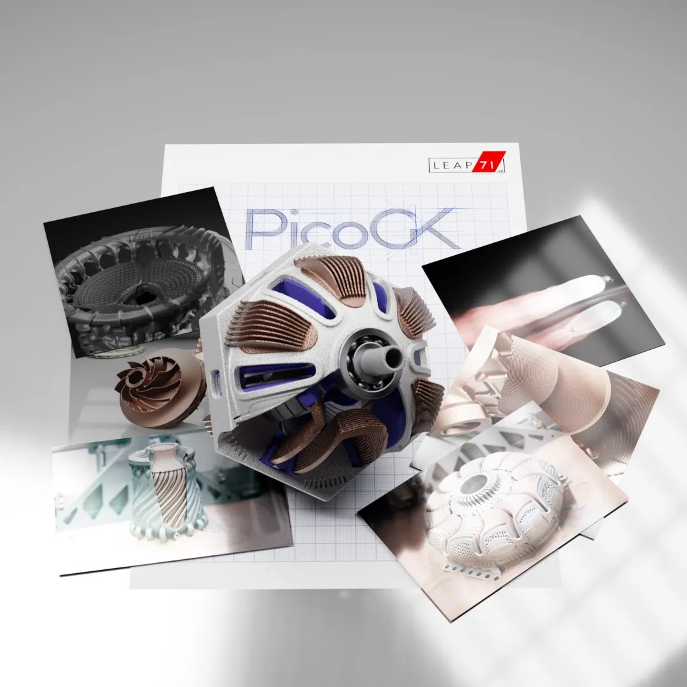

Uma mesa de aparência orgânica parece, à primeira vista, um problema de escultura digital. Mas o projeto muda de escala quando descrevemos a forma por regras: uma superfície para o tampo, caminhos curvos para as pernas e operações geométricas para uni-los.
Este estudo explora esse caminho com o PicoGK, kernel de geometria baseado em voxels do ecossistema LEAP 71, e um modelo de engenharia computacional (CEM) implementado em C#. Em vez de ajustar cada vértice à mão, o código combina parâmetros e operações para gerar variações de uma mesa biônica.
A natureza segue regras
Estruturas naturais não são desenhadas ponto a ponto. Sua forma emerge de processos e restrições. A engenharia computacional adota uma ideia semelhante: descrevemos relações, limites e parâmetros; o algoritmo constrói a geometria resultante.
Para esta mesa, o modelo organiza a forma em três componentes. Cada um pode ser ajustado sem redesenhar a peça inteira:

A união suave entre tampo e pernas
Um ponto crítico do projeto é a junção entre elementos: simplesmente encostar dois volumes pode deixar quinas ou concentrar mudanças bruscas de seção. Uma operação morfológica de fechamento, conhecida neste contexto como over-offsetting ou triple offset, pode suavizar a união.
Em termos intuitivos, o volume é expandido por uma distância definida e depois retraído. A expansão aproxima e funde regiões próximas; a retração recupera parte do contorno. O raio aplicado determina quanto a junção será arredondada. Isso ajuda a produzir uma transição contínua na geometria, mas não comprova, por si só, resistência ou segurança da peça.
Rodando o modelo na nuvem
O experimento foi executado no Google Colab, um ambiente Linux sem monitor físico. O material de referência descreve a preparação de um ambiente gráfico virtual com Xvfb para atender dependências do motor, a instalação do .NET 8 e a compilação de bibliotecas nativas necessárias ao PicoGK.
Esse tipo de configuração exige atenção a dependências do sistema, memória e tempo disponível por sessão. A estratégia apresentada processa conjuntos de parâmetros em lote — por exemplo, variações no número de apoios, espessura de gyroid e geometrias — e salva cada resultado para comparação.

Do modelo aos arquivos de fabricação
Segundo a saída mostrada, o script gerou dez variações, registrando para cada uma parâmetros geométricos, contagem de vértices e triângulos, volume estimado e tempo de processamento. Os arquivos foram exportados em STL e reunidos em um ZIP.
Um STL pode ser aberto em um fatiador para preparar a impressão, mas a exportação é apenas uma etapa do processo. Antes da fabricação, ainda é preciso verificar escala e unidades, espessuras mínimas, orientação, suportes, tolerâncias, material e capacidade da máquina. A contagem de triângulos, isoladamente, não demonstra que a malha esteja fechada nem que a peça seja imprimível.

Desenhar a regra, explorar a forma
O ganho principal da abordagem paramétrica está na exploração. Se o tampo precisar ser mais largo, se o número de apoios mudar ou se o preenchimento interno exigir outra escala, esses ajustes podem ser expressos como parâmetros e recalculados pelo modelo.
Isso não elimina decisões de projeto. Apenas as desloca: em vez de editar cada superfície manualmente, o projetista precisa definir relações coerentes, limites de fabricação e critérios para avaliar cada alternativa. O computador gera a forma; engenharia e validação decidem se ela atende ao uso pretendido.
Geometria computacional transforma intenções formais em modelos ajustáveis. A passagem para um objeto confiável requer, além da forma, material, processo e validação.
Referência técnica
O relato e as imagens de resultados deste artigo foram preparados a partir do material fornecido pelo autor sobre o projeto “Bionic Organic Tables” com PicoGK e LEAP 71. Para reproduzir o experimento, consulte a documentação oficial atual do PicoGK e do ambiente utilizado; versões de bibliotecas, dependências e instruções de instalação podem mudar.